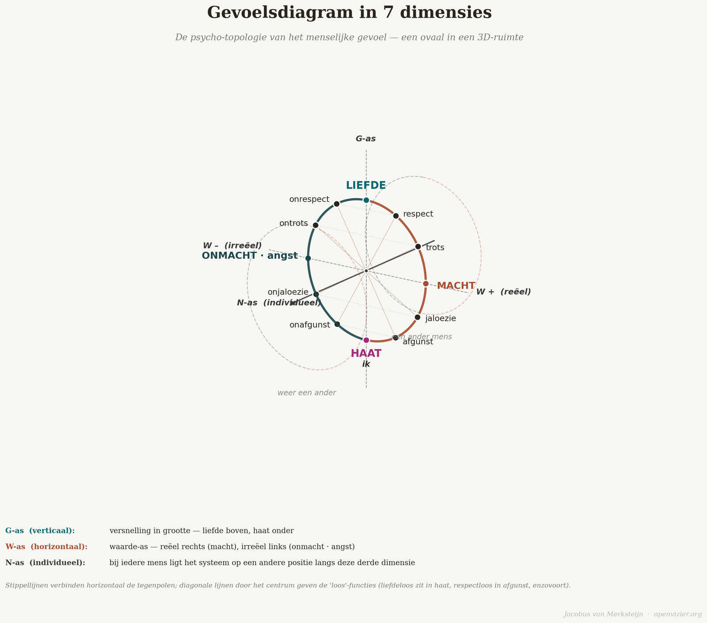
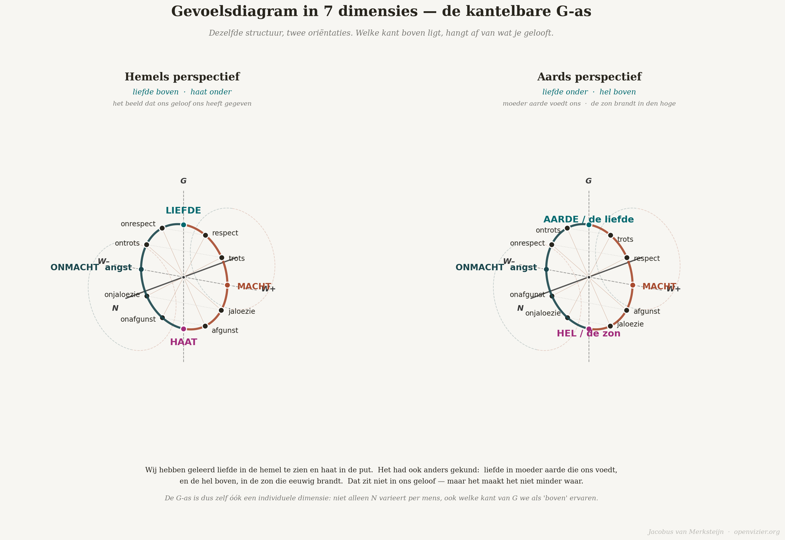

Les Sept Dimensions
Le modèle 7D du sentiment humain
Théorie · 14 min de lecture

Par Jacobus van Merksteijn
Imaginez que vous dressiez une carte de la vie intérieure d’un être humain. Pas un portrait psychologique, pas une liste de traits ou de diagnostics, mais une véritable carte — avec des rapports spatiaux, des axes et des distances, des régions qui se jouxtent et d’autres qui sont très éloignées. Une topographie de la vie affective.
C’est ce que tente de faire le modèle affectif à 7 dimensions. Il s’agit d’une carte, non pas des sentiments eux-mêmes — les sentiments ne se laissent pas enfermer — mais des rapports structurels entre eux. Quel rapport la fierté entretient-elle avec la jalousie ? Quelle est la relation entre le pouvoir et la peur ? Quand l’amour devient-il haine, et par quel chemin ? Ces questions ne sont pas des ornements philosophiques. Elles sont pratiques. Celui qui connaît la carte ne navigue pas de la même manière.
Je vais l’expliquer ici au lecteur ordinaire, sans les fondements mathématiques. L’exhaustivité se trouve dans la base théorique que j’ai développée séparément. Ceci est l’introduction — l’orientation destinée à qui veut comprendre la structure avant d’en aborder les détails.
La forme fondamentale : un ovale dressé dans l’espace

La forme de base du modèle est un ovale dressé. Non pas posé à plat sur une surface, mais debout, comme une colonne vertébrale. L’ovale a un haut et un bas, une gauche et une droite, ainsi qu’une profondeur — l’axe qui entre dans l’image et en sort.
Le point supérieur de l’ovale est l’amour. Le point inférieur est la haine. C’est la propriété structurelle la plus fondamentale du modèle : l’amour et la haine ne sont pas de simples contraires placés de part et d’autre d’une ligne. Ce sont les deux extrêmes d’un même arc continu. Et il existe deux chemins de l’amour à la haine : par la droite et par la gauche.
C’est la propriété structurelle la plus fondamentale du modèle : l’amour et la haine ne sont pas de simples contraires placés de part et d’autre d’une ligne.
Ces deux chemins décrivent deux univers psychologiques fondamentalement différents.
L’arc droit : le côté réel
L’arc droit va de l’amour (en haut), en passant par le point le plus à droite, jusqu’à la haine (en bas). Les sentiments situés sur cet arc sont ancrés dans un rapport réel avec le monde extérieur. Réel, dans la terminologie de ce modèle, signifie que le sentiment prend sa source dans quelque chose qui existe réellement, en dehors de vous.
Juste sous l’amour, sur l’arc droit, se trouve le respect. Non pas le respect abstrait d’une règle de politesse, mais l’expérience concrète d’être reconnu dans sa propre valeur par un autre être humain. Le respect est un sentiment réel : on ne peut pas l’inventer soi-même s’il n’existe pas. Il a besoin d’un vis-à-vis.
Un peu plus bas se trouve la fierté. La reconnaissance intérieure de sa propre réussite ou de sa propre qualité, en rapport avec le monde extérieur. La fierté se distingue du narcissisme : elle est fondée sur ce qui a réellement été accompli. Le narcissisme est une histoire qui dérive, détachée de la réalité.
À l’extrémité de l’arc droit — le point le plus à droite, à mi-hauteur — se trouve le pouvoir. La capacité d’être efficace, de faire advenir les choses, d’exercer une influence. Dans ce modèle, le pouvoir est neutre : il décrit une position dans la structure, non un jugement moral. Le pouvoir peut être mis au service de bonnes ou de mauvaises fins. La position reste la même.
Au-delà du pouvoir, du côté qui descend vers la haine, se trouve la jalousie. La jalousie est la perception réelle qu’un autre possède quelque chose que l’on désire soi-même sans l’avoir. Elle est réelle parce qu’elle est fondée sur une différence effectivement observée. Elle comporte une dimension active : la jalousie ne veut pas seulement que l’autre ne l’ait pas — elle veut l’avoir elle aussi.
Juste au-dessus de la haine se trouve l’envie. Et c’est ici que la distinction entre jalousie et envie devient cruciale, car dans le langage courant, on les emploie indifféremment. L’envie ne veut pas que vous l’ayez vous-même. L’envie veut que l’autre ne l’ait pas non plus. C’est le désir de voir l’autre tomber, indépendamment de tout gain personnel. L’envie porte la haine en elle à l’état de potentialité.
Et puis la haine, tout en bas. Non pas le contraire de l’amour au sens enfantin — je t’aime, je te hais — mais l’état d’une connexion négative maximale avec la réalité extérieure à soi. Le rejet actif. L’orientation destructrice.
L’arc gauche : le côté irréel
L’arc gauche est parallèle au droit, mais se trouve de l’autre côté. Les sentiments qui s’y situent sont les pôles irréels des sentiments réels de l’arc droit. Irréel ne signifie pas : inexistant, impossible à ressentir ou moins valable. Cela signifie : fondé sur un état intérieur qui peut exister indépendamment du monde extérieur factuel.
Juste sous l’amour, sur l’arc gauche, se trouve le non-respect. Ce mot mérite qu’on s’y arrête. Le non-respect n’est pas l’absence de respect venant de l’extérieur — ce serait un sentiment réel, la situation dans laquelle quelqu’un ne vous respecte effectivement pas. Le non-respect en tant que sentiment irréel est l’expérience profonde de soi comme n’étant pas digne de respect. Ce sentiment peut être présent indépendamment de l’opinion des autres à votre égard. Des personnes respectées par tout le monde et qui se sentent pourtant fondamentalement inférieures connaissent ce sentiment de l’intérieur.
Un peu plus bas se trouve la défierté. L’expérience d’une insuffisance détachée de ce que l’on a effectivement accompli. Dans sa forme extrême : la honte profonde — non pas comme émotion morale, mais comme savoir intérieur direct que l’on est fondamentalement à la hauteur de rien.
À l’extrémité de l’arc gauche se trouve l’impuissance, qui partage cette position avec la peur. Dans ce modèle, l’impuissance et la peur sont deux aspects d’un même phénomène : l’impuissance est la position structurelle — le sentiment de ne pas en être capable. La peur en est la composante temporelle — l’expérience de ce qui menace et que l’impuissance empêche de détourner. Celui qui éprouve structurellement l’impuissance vit le monde comme une menace. Voilà ce qu’est la peur.
La peur est la composante temporelle — l’expérience de ce qui menace et que l’impuissance empêche de détourner.
Au-delà du milieu, en direction de la haine, se trouve la non-jalousie. C’est un sentiment subtil et peu évoqué : non pas le désir de ce que l’autre possède, mais l’incapacité à désirer — l’état intérieur d’être anesthésié à son propre manque. La personne qui ne peut pas ressentir sa propre jalousie a perdu le contact avec son propre désir. Ce n’est pas un signe de sainteté. C’est un signe de fermeture.
Puis l’absence d’envie, juste au-dessus de la haine. Non pas le souhait actif de voir l’autre tomber, mais l’engourdissement face à la chute de l’autre. Ne plus être atteint par l’injustice. Que cela n’ait plus aucune importance.
Et la haine, en bas, partagée avec l’arc droit. L’amour, en haut, relie les deux arcs. La haine, en bas, les relie elle aussi. Aux points extrêmes, la distinction entre le réel et l’irréel s’efface.
Les trois axes
L’ovale flotte dans un espace tridimensionnel défini par trois axes.
L’axe G est vertical : de l’amour, en haut, à la haine, en bas, dans l’orientation standard. G signifie grandeur, la dimension de l’intensité. Plus on monte sur l’axe G, plus le sentiment se déplace vers l’amour. Plus on descend, plus il converge vers la haine.
L’axe W est horizontal : le réel à droite, l’irréel à gauche. W signifie valeur, et pose la question de savoir si un sentiment est ancré dans le monde extérieur ou dans le monde intérieur. Au point le plus à droite se trouve le pouvoir. Au point le plus à gauche, l’impuissance et la peur. Ils sont les images en miroir l’un de l’autre — non pas leurs opposés qualitatifs, mais des isomorphes structurels. Qui a éprouvé le pouvoir sait ce que l’impuissance fait ressentir. Non par raisonnement, mais par proximité structurelle.
L’axe N s’étend dans la profondeur — perpendiculairement au plan formé par les axes G et W, pour ainsi dire en entrant dans l’image et en en sortant. Chez chaque être humain, la structure ovale complète se trouve à une position différente le long de l’axe N. L’axe N est la dimension individuelle. Deux personnes qui emploient le même mot — jalousie, fierté, peur, amour — éprouvent le sentiment correspondant à partir d’une biographie totalement différente. La jalousie d’un enfant qui grandit dans la pauvreté et celle d’un enfant qui grandit dans l’abondance occupent le même emplacement géométrique dans l’ovale, mais une position N totalement différente. Elles sont structurellement identiques, mais radicalement différentes sur le plan biographique.
L’axe N rend le modèle dynamique : au cours de sa vie, un être humain se déplace le long de l’axe N. Les expériences, les processus d’apprentissage, les traumatismes, le rétablissement — tout cela déplace la position N. La structure de l’ovale demeure ; c’est la position de l’être humain en son sein qui se déplace.
Les fonctions diagonales de privation
L’élément le plus surprenant du modèle réside dans les liaisons diagonales — les fonctions de privation. Elles ne vont pas horizontalement de droite à gauche, mais en diagonale : d’un point de l’arc droit, à travers le centre de l’ovale, jusqu’à un point de l’arc gauche qui ne se trouve pas à la même hauteur.
Le centre de l’ovale est le point zéro — le point du vide maximal, le silence intérieur dans sa forme extrême ; non pas le silence qui porte, mais celui qui signale qu’il n’y a plus aucun contact avec la vie affective.
Les paires diagonales sont les suivantes : le respect (en haut à droite), à travers le centre, mène à l’absence d’envie (en bas à gauche). La fierté (en haut à droite), à travers le centre, mène à l’absence de jalousie (en bas à gauche). La jalousie (en bas à droite), à travers le centre, mène à l’absence de fierté (en haut à gauche). L’envie (en bas à droite), à travers le centre, mène à l’irrespect (en haut à gauche).
Les paires diagonales sont les suivantes : le respect (en haut à droite), à travers le centre, mène à l’absence d’envie (en bas à gauche).
Que signifie tout cela ? Cela décrit l’état qui naît lorsqu’un sentiment est déchargé à travers le point zéro. Le sans-amour se trouve dans la haine — non pas l’absence d’amour, mais sa négation active, la haine qui a traversé le point zéro. L’impuissance se trouve dans la peur. Le sans-respect — au sens topologique — décrit un état d’engourdissement à l’égard de l’autre, qui a traversé le centre du respect.
La distinction entre l’irrespect (le pôle opposé horizontal) et le sans-respect (la fonction diagonale de privation) n’est pas une coquetterie sémantique. Elle est fondamentale. L’irrespect est un sentiment actif : la perception intérieure directe du fait de ne pas être digne de respect. Le sans-respect est l’état dans lequel on n’a plus aucun contact avec le sentiment de respect lui-même — une érosion, non une image en miroir. Les deux produisent des comportements que le monde extérieur qualifie de « irrespectueux », mais leur architecture interne diffère totalement, et donc aussi la réaction adéquate à leur opposer.
L’axe G inclinable : céleste ou terrestre ?

Il existe une propriété du modèle qui est la plus radicale de toutes et que je ne veux pas laisser passer sous silence ici : l’axe G est inclinable.
Dans l’orientation standard, l’amour est en haut et la haine en bas. C’est la perspective céleste — l’orientation occidentale, façonnée par le christianisme. Dieu est en haut, le mal est en bas. La lumière monte, les ténèbres descendent. Cet ordre est si profondément enraciné qu’il semble aller de soi, comme si l’amour et le haut étaient liés de manière non contingente.
Mais il existe aussi une perspective terrestre. Dans cette perspective, l’amour est en bas — telle la Terre mère qui nous porte et nous nourrit, le sol sur lequel nous nous tenons, la source de toute vie. Et la haine est en haut — tel le soleil qui brûle et calcine ce qui s’expose trop longtemps à ses rayons. La terre nourrit. Le soleil brûle.
Ce n’est pas du relativisme. C’est de la topologie. Une même structure peut exister selon plusieurs orientations sans que la structure elle-même change. Ce qui change, c’est le sens qu’une culture ou un individu attribue aux positions. Et ce sens constitue en lui-même un fait psychologique concernant la personne — quelque chose qui peut être étudié, compris et, le cas échéant, corrigé.
Les cultures ne sont pas les seules à s’orienter à leur manière sur l’axe G. Les individus aussi. Pour quelqu’un qui a grandi dans une tradition où l’amour de la terre occupe une place centrale — la paysanne qui connaît son sol, le pêcheur qui connaît sa mer — l’orientation terrestre de l’axe G est immédiatement reconnaissable. Pour quelqu’un qui a grandi dans une tradition religieuse urbaine, l’orientation céleste va de soi. Les deux sont valides. L’axe G est lui-même une variable individuelle. Cela confère au modèle un caractère radicalement personnel.
Ce que la carte permet de voir
Une carte est utile si elle vous montre où vous êtes et comment aller de A à B. La topographie de la vie affective fait la même chose. Elle montre que l’impuissance et la jalousie ne sont pas des sentiments de même nature, même s’ils sont tous deux douloureux. Elle montre que l’envie et la jalousie sont apparentées structurellement, mais fondamentalement différentes. Elle rend visible la distinction entre un sentiment ancré dans la réalité et un sentiment qui ne l’est pas — une distinction qui s’est entièrement perdue dans le langage courant.
Et elle fournit le langage du débat dont nous avons besoin en tant que société : non pas celui qui porterait sur « quels sentiments sont bons et lesquels sont mauvais » — question moralisatrice qui ne mène nulle part — mais celui qui chercherait à savoir d’où vient un sentiment, par quel chemin il est là et ce qu’il demande. Ce débat n’est possible que s’il existe une carte commune. Voici cette carte.
Pour ceux qui souhaitent poursuivre leur lecture : le diagramme des sentiments en 7 dimensions est développé dans son intégralité, y compris sa topologie mathématique et ses applications thérapeutiques, dans l’ouvrage Fondement de pensée pour un modèle des sentiments en 7 dimensions. Le développement pédagogique — ce que signifient les Sept Dimensions pour le développement des enfants à chaque âge — se trouve dans le Manifeste pour l’enseignement et l’éducation. Les deux textes sont disponibles en téléchargement sur openvizier.org.
Le développement pédagogique — ce que signifient les Sept Dimensions pour le développement des enfants à chaque âge — se trouve dans le Manifeste pour l’enseignement et l’éducation.
Les Sept Dimensions du sentiment
Imaginez que vous dressiez une carte de la vie intérieure. Non pas des sentiments eux-mêmes — ils se laissent difficilement saisir — mais des rapports structurels entre les sentiments.
« Qui connaît la carte navigue autrement. »
La forme fondamentale : un ovale dressé
La forme de base se tient debout, comme une colonne vertébrale. Le point supérieur est l’amour, le point inférieur la haine. Pas une opposition simple, mais les deux extrêmes d’un même arc continu. Et il existe deux chemins de l’amour à la haine : par la droite et par la gauche. Ces deux chemins décrivent deux mondes psychologiques fondamentalement différents.
Deux arcs : le réel et l’irréel
L’arc droit porte les sentiments réels — enracinés dans quelque chose qui existe véritablement, hors de vous : le respect, la fierté, le pouvoir, la jalousie, l’envie. La jalousie veut l’avoir elle aussi ; l’envie veut que l’autre ne l’ait pas non plus. Cette distinction est cruciale.
L’arc gauche porte les pôles opposés irréels — enracinés dans un état intérieur qui peut exister indépendamment du monde extérieur : l’irrespect, la défierté, l’impuissance, la peur, la non-jalousie, la non-envie. L’impuissance et la peur partagent un même point : l’impuissance est la position structurelle, la peur l’expérience temporelle de cette position.
Trois axes, fonctions de perte diagonales
L’axe G s’étend verticalement (intensité, de l’amour à la haine). L’axe W horizontalement (valeur, du réel à droite à l’irréel à gauche). L’axe N s’enfonce dans la profondeur : la dimension individuelle. Deux personnes qui emploient le même mot peuvent vivre le sentiment à partir de biographies complètement différentes. L’axe N rend le modèle dynamique et radicalement personnel.
Le plus surprenant : les fonctions de perte diagonales traversent le centre — le point zéro, le vide extrême où tout contact avec la vie affective a disparu. L’absence d’amour se situe dans la haine. L’impuissance se situe dans la peur. L’irrespect (un effet de miroir) et l’absence de respect (une érosion qui passe par le centre) ne sont pas la même chose — et cette différence détermine la réaction adéquate.
L’axe G inclinable
Dans l’orientation standard, l’amour est en haut et la haine en bas — la perspective céleste, marquée par le christianisme. Mais il existe aussi une perspective terrestre : l’amour en bas, telle la mère Terre qui porte et nourrit ; la haine en haut, tel le soleil qui brûle. La terre nourrit. Le soleil brûle.
Ce n’est pas du relativisme. C’est de la topologie. Une même structure peut exister selon plusieurs orientations sans se modifier elle-même.
Conclusion
Une carte est utile lorsqu’elle montre où l’on se trouve et comment aller de A à B. Cette topographie le fait : elle rend visible ce que le langage courant a aplati. Et elle fournit le langage du débat dont nous avons besoin — non pas sur les sentiments qui seraient bons ou mauvais, mais sur l’origine d’un sentiment et sur ce qu’il demande.
Ce débat n’est possible que s’il existe une carte commune. Voici cette carte. — Jacobus van Merksteijn